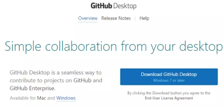

¿Qué es Git Hub?
Vamos a explicarte qué es exactamente Github y cuáles son sus características principales. Se trata de una de las principales plataformas para crear proyectos abiertos de herramientas y aplicaciones, y se caracteriza sobre todo por sus funciones colaborativas que ayudan a que todos puedan aportar su granito de arena para mejorar el código.
Proceso de instalación
Descargar e instalar GitHub Desktop
- Paso 1: Para Utilizar GitHub lo primero es tener una cuenta, ingresa a la siguiente pagina:
- Paso 2: Ya estando en la pantalla que se muestra, crearemos la cuenta llenando con nuestros Datos. En la página principal del sitio web, deberías ver un botón grande de descarga para Windows. Haz clic en él para descargar el archivo de instalación.
- Paso 3: Una vez seleccionado el tipo de Cuenta, presiona el botón "finish Sign Up" para finalizar la configuracion.
- Paso 4: A continuación nos llegara un Correo de Verificación de la cuenta, hay solo presiona "Verify email address"
- Paso 5: Ya podemos comenzar a crear repositorios y trabajar en ellos desde la misma pagina..
- Paso 6: Descarga la version para escritorio OS X o Windows, descarga la version que te pertenece. hazlo en la siguiente pagina: https://desktop.github.com/
- Paso 7: Solo haz clic en Download y comenzara a descargar el Instalador.
- Paso 8: La Instalación es muy simple, damos siguiente en todo lo que aparesca, instalar y esperamos a que termine con la instalación.
- Paso 9: Ingresamos con los datos de nuestra cuenta, nos abrira la siguiente ventana la cual tiene un pequeño tutorial.
 |